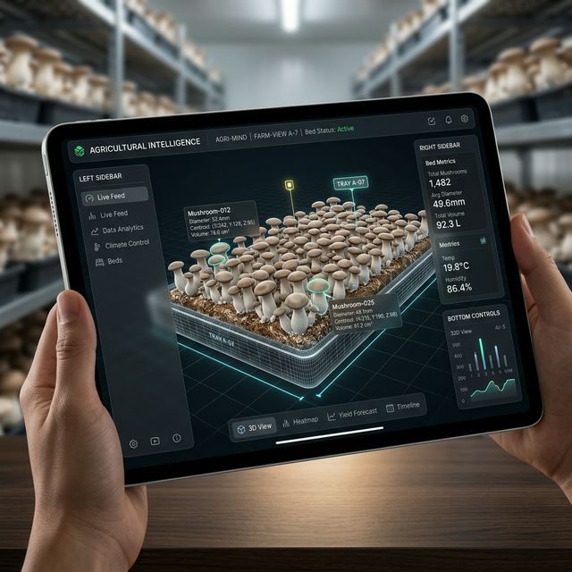
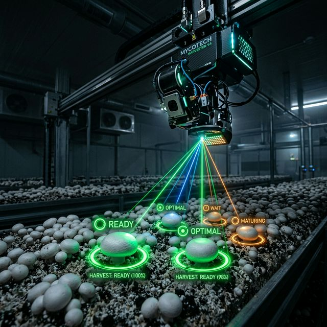
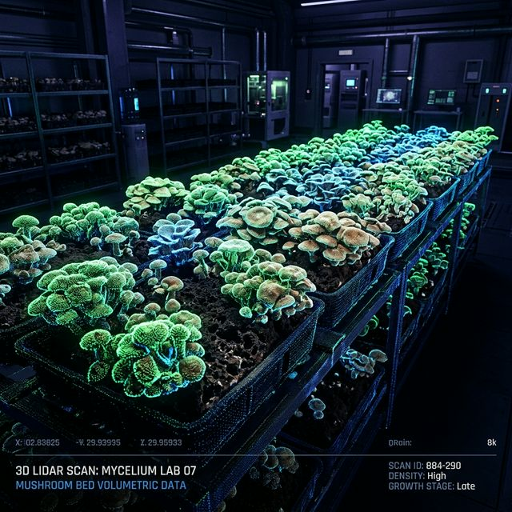

Zivi Farms is building the operating system for precision agriculture—transforming complex, labor-intensive farming into a data-driven, scalable industry. By combining spatial intelligence, biological computer vision, and real-time analytics, we enable farms to move from uncertainty to precision.
From mushroom cultivation to high-value crops, our platform digitizes growth, guides harvesting, and optimizes yield—down to the millimeter.
At the core of Zivi Farms lies a proprietary platform designed to digitize the physical world of agriculture and convert biological complexity into structured, actionable intelligence. Unlike traditional agri-tech tools that operate as isolated solutions, Zivi functions as a continuously learning system—capturing, interpreting, and optimizing every stage of crop growth.
LiDAR and RGB data are fused to generate high-fidelity, real-time 3D representations of the growing environment. This enables the system to understand depth, volume, and spatial relationships—critical variables that conventional 2D imaging systems miss.
Our neural models are specifically engineered to operate in organic, highly variable environments. They identify subtle biological markers such as growth stages, health conditions, and quality deviations, surpassing manual human observation.
Standardize decision-making across farms. Whether deployed in a single growing room or scaled across industrial facilities, the platform acts as a central intelligence system—turning raw data into precise operational insights.
THE HARDWARE-SOFTWARE LOOP
Bridging the gap between biological growth and industrial data through precision tools.

High-precision scanning creating real-time 3D digital twins. Measures true volume, centroid, and diameter for mm-accurate forecasting.
Learn More
Augmented harvesting guidance. Projects targeted light indicators directly onto crops that meet specific harvesting criteria.
Learn More
Instantly grade and sort harvested crops against standardized metrics. Compare pre and post harvest scans for training.
View SamplesZivi Farms is designed to deliver direct improvements in farm operations by addressing the two most critical variables: yield and labor efficiency.
Increase in productivity for new labor within their first week.
Accurate forecasting ensures supply chain reliability and reduced waste.
Centralized command center to track performance and inefficiencies.
Farms move from uncertain estimates to data-driven predictions, protecting the yield and ensuring consistent market delivery.
The platform reduces operational risk while maximizing profitability across single or multi-room industrial facilities.
Zivi Farms focuses on the most persistent and complex challenges that limit scalability in modern agriculture.
Eliminating dependency on experience by digitizing expertise and embedding it directly into the workflow.
Eliminating profit loss caused by subjective human judgment with standardized, AI-driven grading systems.
Continuous spatial monitoring enables proactive interventions before small problems escalate.
Integrating cutting-edge technologies into a unified platform for scalability and precision.
LiDAR and RGB sensors capture detailed spatial and visual data directly from the growing environment.
Advanced neural networks trained specifically for biological environments form the backbone of our BCV system.
Cloud-based GPU infrastructure handles large-scale data processing and model inference in real time.
This tightly integrated hardware-software loop ensures continuous learning, where every scan improves the system’s accuracy and performance over time.
Initially focused on mushroom cultivation, Zivi is engineered for cross-crop adaptability.
Tracking volumetric growth and optimizing harvesting cycles with precision down to the millimeter.
Monitoring color changes and sugar-density indicators enabling accurate maturity assessment.
Measuring canopy density and environmental markers, providing insights into plant health and efficiency.
We’re actively collaborating with farms, partners, and researchers. Connect with our team to deploy the platform or explore partnerships.
Or send us a message below